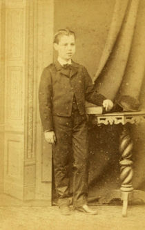
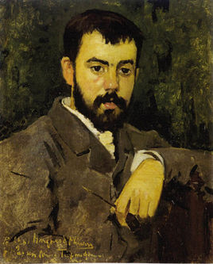
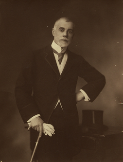

A criação de um repositório digital dedicado exclusivamente a Manuel Teixeira Gomes tem como finalidade armazenar, hiperligar e disponibilizar em acesso livre conteúdos digitais sob a forma de recursos multimédia, que podem ser pesquisados e utilizados pela comunidade em geral e, mais especificamente, pela comunidade académica e científica.
Assim, são nossos objetivos, para além de dar um contributo tecnológico para a divulgação da obra de Manuel Teixeira Gomes, agilizar o acesso à informação dispersa na rede, orientar as pesquisas, sobretudo na comunidade escolar, e impulsionar as instituições para o desenvolvimento de novas plataformas e aplicações digitais que possam ampliar, diversificar e democratizar o acesso ao conhecimento dos contextos histórico-literários em que o nosso escritor-presidente viveu.



